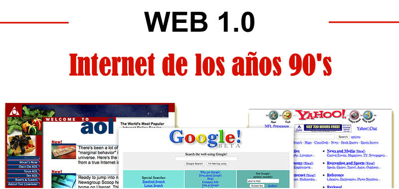
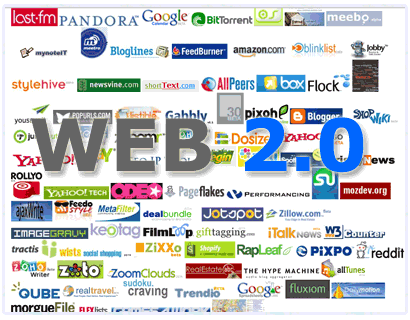
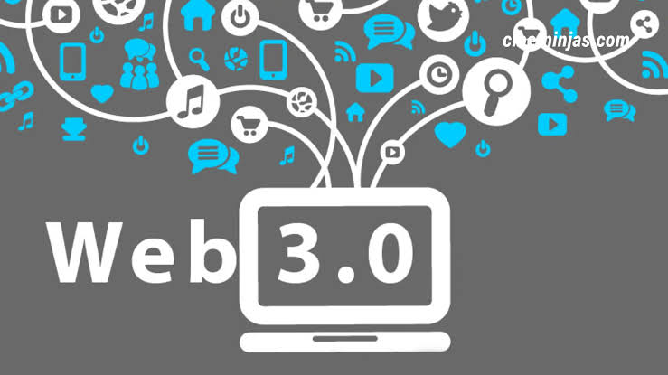
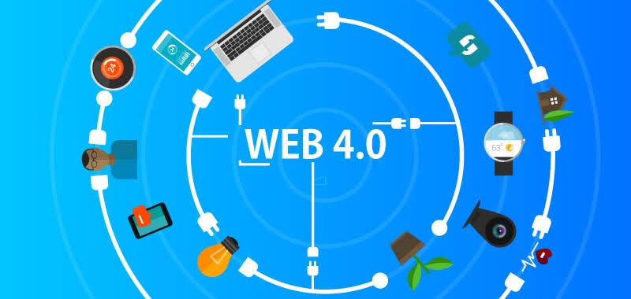

Línea del Tiempo Evolución de la Web
Web 1.0

La Web 1.0 tiene sus inicios en la década de los 90's
primera etapa en la World Wide Web, compuesta por páginas estáticas conectadas por hipervínculos,
sin contenido interactivo.
Web 2.0

El término Web 2.0 se utiliza para referirse a una nueva generación de sitios web que permiten a las personas colaborar y compartir información en línea de formas que antes no eran posibles.
Este tipo de sitios web suelen considerarse interactivos, colaborativos o con contenidos generados por los usuarios.
Web 3.0

Web 3.0 se refiere a una web capaz de interpretar e interconectar un mayor número de datos,
lo que permitirá un aumento de interactividad y significado.
Web 4.0

La Web 4.0 es el próximo gran avance y se centra en ofrecer un comportamiento más inteligente, más predictivo,
de modo que podamos con sólo realizar una afirmación poner en marca un conjunto de acciones que tendrán como resultando aquello que pedimos o decimos.
Regresar al inicio